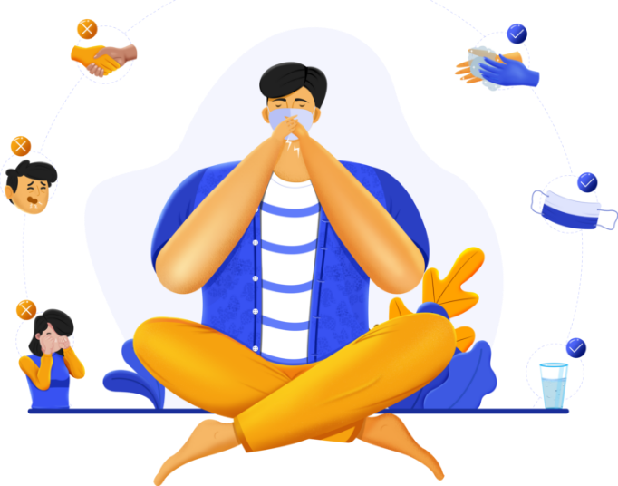

QAYNAR XETT
9103
Unutmayın! Virus sizin görəcəyiniz tədbirlərdən güclü deyil!
Azərbaycan Respublikası Nazirlər Kabineti yanında Operativ Qərargah Telefon: (+99412) 492-41-61 www.cabmin.gov.az
Azərbaycan Respublikası Səhiyyə Nazirliyi Qaynar xətt: 9103 www.health.gov.az
122
Yoluxan sayı
15
Sağalan sayı


Koronavirus nədir?
Koronaviruslar, heyvanlarda və ya insanlarda xəstəlik yarada biləcək böyük bir virus ailəsidir. İnsanlarda bir neçə koronavirusun ümumi soyuqdan Orta Şərq Tənəffüs Sindromu (MERS) və Şiddətli Kəskin Tənəffüs Sindromu (SARS) kimi kəskin xəstəliklərə qədər tənəffüs yoluxucu xəstəliklərə səbəb olduğu bilinir. Ən son aşkarlanan koronavirus, koronavirus xəstəliyinə səbəb olur COVID-19.
COVID-19 nədir?
COVID-19, ən son aşkar edilən koronavirusun yaratdığı yoluxucu xəstəlikdir. Bu yeni virus və xəstəlik, Çinin Wuhan şəhərində, 2019-cu ilin dekabrında başlamazdan əvvəl bilinməmişdir.
COVID-19 simptomları hansılardır?
COVID-19'ün ən çox görülən əlamətləri atəş, yorğunluq və quru öskürəkdir. Bəzi xəstələrdə ağrı və ağrı, burun tıkanıklığı, burun axması, boğaz ağrısı və ya ishal ola bilər. Bu simptomlar ümumiyyətlə yüngül olur və tədricən başlayır. Bəzi insanlar yoluxur, lakin heç bir simptom inkişaf etdirmir və özünü pis hiss etmir. Əksər insanlar (təxminən 80%) xüsusi müalicəyə ehtiyac duymadan xəstəlikdən sağalırlar. COVID-19 alan hər 6 nəfərdən 1-i ciddi xəstələnir və nəfəs almaqda çətinlik çəkir. Yaşlı insanlar və yüksək təzyiq, ürək problemləri və ya şəkərli diabet kimi əsas tibbi problemləri olanların ciddi xəstəliklərə tutulma ehtimalı daha yüksəkdir. Atəş, öskürək və nəfəs almaqda çətinlik çəkən insanlar həkimə müraciət etməlidirlər.
COVID-19 necə yayılır?
İnsanlar COVID-19-u virusa yoluxan digər şəxslərdən tuta bilər. Xəstəlik, COVİD-19 olan bir adam öskürəndə və ya ifraz etdikdə yayılan burun və ya ağızdan kiçik damlalar vasitəsilə insandan insana keçə bilər. Bu damlacıqlar ətrafdakı əşyalara və səthlərə enir. Digər insanlar daha sonra bu əşyalara və ya səthlərə toxunaraq, sonra gözlərinə, burnuna və ya ağzına toxunaraq COVID-19-u tuturlar. İnsanlar COVID-19 damlalarından öskürən və ya çıxaran COVID-19 olan bir insanın damlacıqlarından nəfəs alsalar da tuta bilərlər. Buna görə xəstə bir insandan 1 metrdən çox məsafədə qalması vacibdir. COVID-19-a səbəb olan virus hava ilə ötürülə bilərmi? Bu günə qədər aparılan araşdırmalar, COVID-19-a səbəb olan virusun, əsasən hava ilə deyil, tənəffüs damlaları ilə təmas yolu ilə ötürüldüyünü göstərir.
COVID-19-dan narahat olmalıyam?
COVID-19 infeksiyası səbəbindən yaranan xəstəlik ümumiyyətlə mülayimdir, xüsusən uşaqlar və gənc yetkinlər üçün. Ancaq ciddi bir xəstəliyə səbəb ola bilər: onu tutan hər 5 nəfərdən 1-i xəstəxana müalicəsinə ehtiyac duyur. Buna görə insanların COVID-19 püskürməsinin onlara və yaxınlarına necə təsir edəcəyindən narahat olması olduqca normaldır. Narahatlıqlarımızı özümüzü, yaxınlarımızı və icmalarımızı qorumaq üçün hərəkətə keçirə bilərik. Bu hərəkətlər arasında ilk növbədə müntəzəm və hərtərəfli əl yuma və yaxşı tənəffüs gigiyenasıdır. İkincisi, səyahət etmək, hərəkət etmək və toplaşmaq üçün qoyulan hər hansı bir məhdudiyyət daxil olmaqla məlumatlı olun və yerli səhiyyə orqanlarının tövsiyələrinə əməl edin.
Koronavirusa yoluxma ehtimalım?
Risk harada olduğunuzdan və daha dəqiq desək, orada COVID-19 yayılması olub-olmamasından asılıdır. Əksər yerlərdə əksər insanlar üçün COVID-19-u tutmaq riski hələ də azdır. Halbuki indi dünyada xəstəliyin yayıldığı yerlər (şəhərlər və ya bölgələr) var. Bu ərazilərdə yaşayan və ya ziyarət edən insanlar üçün COVID-19-un tutulma riski daha yüksəkdir. Hökumətlər və səhiyyə orqanları hər dəfə yeni bir COVID-19 hadisəsi aşkar edildikdə ciddi tədbirlər görürlər. Səyahət, hərəkət və ya böyük toplantılarda hər hansı bir yerli məhdudiyyətlərə əməl etməyinizə əmin olun. Xəstəliyə nəzarət səyləri ilə işləmək COVID-19-un tutulması və ya yayılması riskini azaldır. Çində və bəzi digər ölkələrdə göstərildiyi kimi COVID-19 yayılması ola bilər və ötürülmə dayandırıla bilər. Təəssüf ki, yeni başlanğıclar sürətlə ortaya çıxa bilər.
Özümü qorumaq üçün maska taxmalıyam?
Yalnız COVID-19 əlamətləri ilə xəstələnirsinizsə (xüsusən öskürək) və ya COVİD-19 olan birinə baxmağınız təqdirdə maska taxın. Birdəfəlik üz maskası yalnız bir dəfə istifadə edilə bilər. Xəstə deyilsinizsə və ya xəstə birinə baxırsınızsa, maskanı israf edirsiniz.
Əllərinizi tez-tez yuyun!
Simptomlar hiss etdiyiniztəqdirdə maska taxın!
Su içməyi unutmayın!
Əllərinizi dezinfeksiya etmədəngözünüzə, ağzınıza toxunmayın!
Asqırma və öskürək zamanıağzınızı örtün!
Əl ilə görüşməkdən çəkinin!
